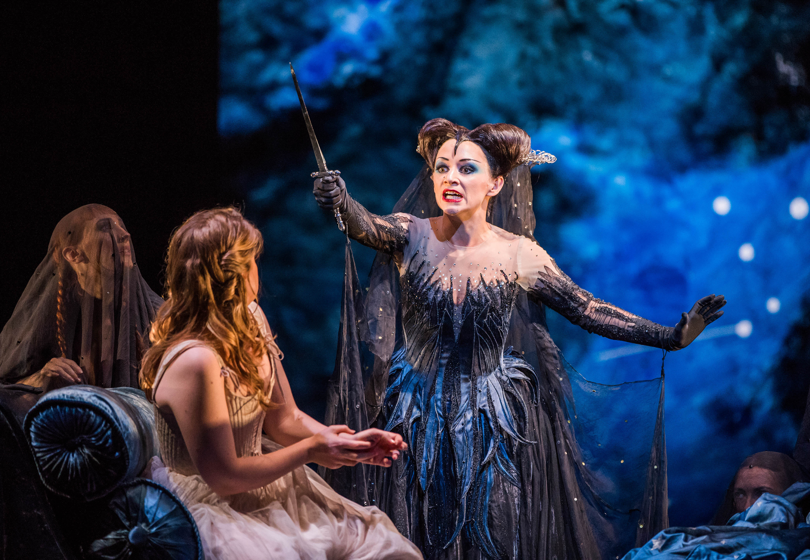
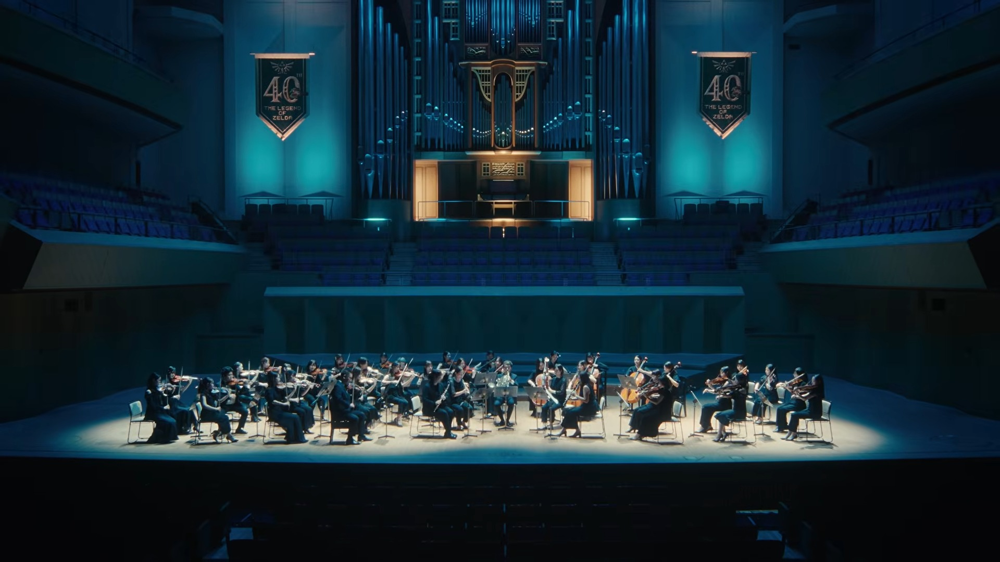

The Orchestra
What is an orchestra?
An orchestra is a group of musicians that play a wide variety of instruments. An orchestra can play all sorts of pieces from classical to opera to pop culture. They are typically led by a conductor and feature four main sections of instruments: strings, woodwinds, brass, and percussion. Each of these sections adds another layer to the pieces the orchestra plays.

What makes it different from other ensembles?
An orchestra is different from other ensembles in its diversity. Orchestras have the widest variety of instruments. Not many other ensembles would you find an oboe, double bass, and trombone player all in the same room. Due to having such a wide variety of instruments, orchestras play a wide variety of pieces. Operas typically have a pit orchestra that meets the needs of the opera. Orchestras have performed for celebration anniversary concerts of movies and video games. Orchestras also typically like to play pieces that feature a soloist, including many classical pieces where most of the orchestra is accompaniment.

